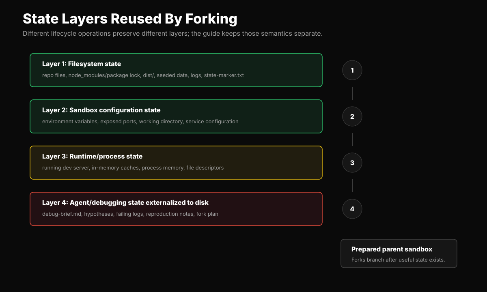

Lifecycle semantics
Do Not Collapse Stop, Pause, Fork, Snapshot
The guide should make conservative, concrete claims about which state each operation reuses.


Lifecycle semantics
The guide should make conservative, concrete claims about which state each operation reuses.

